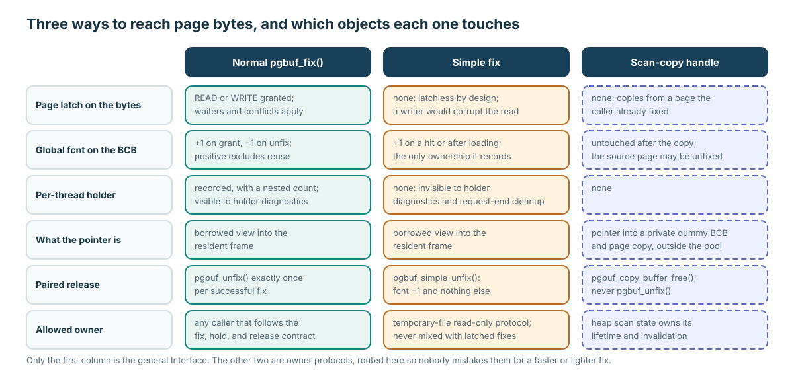

Three access forms

A familiar return type does not transfer a different protocol's ownership, guards, permissions, or cleanup.

fcnt and holder state.| Value | Correct treatment |
|---|---|
Normal fixed PAGE_PTR | Use within granted latch/fix lifetime; ordinary unfix repays it. |
Simple-fixed PAGE_PTR | Temporary read-only owner only; simple unfix; no writer. |
Scan-copy PAGE_PTR shape | Private snapshot; free handle; never dirty, flush, or unfix. |
| Approximate metric | Form a hypothesis; re-enter a protected path before action. |
| ID | Pinned status | Maintainer treatment |
|---|---|---|
VS-01 | Declared/macro-mapped; no definition or caller located. | Unavailable, not an optimization choice. |
VS-02 | copy_to_area prose/executable do_fetch drift. | Existing owner only; false-on-miss may return unchanged area. |
VS-03 | copy_from_area normal path ignores do_fetch. | Not a WAL-aware general page writer. |
VS-04 | pgbuf_peek_stats prototype-name drift. | Map outputs from executable semantics, not names alone. |
VS-05 | Some diagnostic values are approximate snapshots. | Never use them as mutation/deallocation authorization. |
page_buffer.c:2688–2811page_buffer.c:908–981page_buffer.c:4701–4912page_buffer.c:14748–14847page_buffer.c:17323–17530page_buffer.h:320–326